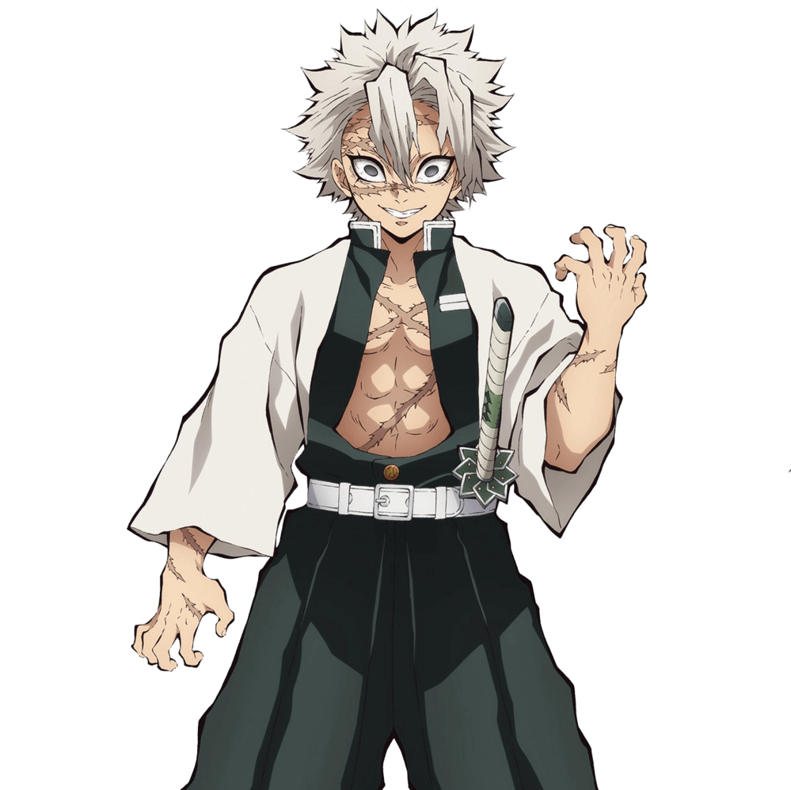

不死川實彌（しなずがわ さねみ Shinazugawa Sanemi）
- 配音 : 關智一（日本）；陳彥鈞（台灣）；郝祥海（中國大陸）；Kaiji Tang（美國）；周倚天（Viu）、（TVB）（香港）
- 鬼殺隊風柱，風之呼吸的使用者。留著銀白色刺蝟頭，鬼殺隊制服外披著背後寫有「殺」字樣的白色羽織。為了秀自己的肌肉而喜歡把胸前的衣服敞開。身上有著許多傷痕，臉上的傷疤是和鬼化的母親搏鬥後留下的。性格粗暴，極度不認同人鬼共存。為保護在被鬼襲擊後唯一生還的弟弟玄彌不再受到鬼的傷害，故意對其冷漠，想讓他離開鬼殺隊，過上正常的生活。 生於一個九口大家庭，父親是個不務正業的流氓，時常對家中妻小暴力相向，因得罪人而遇刺身亡。原本是個善良可靠的大哥，在父親死後向大弟玄彌立誓要保護好這個家。然而在某夜，弟妹接連遭到鬼化的母親襲擊，他在趕回家後要玄彌帶著弟妹逃走，自己則與母親在外頭僵持。在親手殺死母親後被玄彌誤解，從此性格大變。 隱居深山時以自殺式攻擊狩獵惡鬼，其間遇到鬼殺隊隊員粂野匡近，並透過粂野介紹接受培育者的特訓學會風之呼吸法進入鬼殺隊。期間，實彌逐漸與匡近成為好友，兩人曾一同受到胡蝶香奈惠的照料。但粂野在討伐前下弦之壹·姑獲鳥的任務中陣亡，自己則因為消滅十二鬼月有功而成為風柱。摯友的死讓他將一切過錯怪罪在鬼殺隊當主產屋敷耀哉身上，但當他得知產屋敷一族痛苦又悲慘的命運，以及從產屋敷手上拿到粂野上陣前所寫下的訣別書時，因愧疚而落下眼淚，對主公的態度也從厭惡轉變成尊敬。 在柱合會議上討論炭治郎的裁決時，為了向主公證明禰豆子會傷害人而割傷自己的手，意圖用人血誘發禰豆子的嗜血性，並不斷用刀刺傷禰豆子企圖刺激她。在確定禰豆子不會吃人之後，雖然心有不甘，但也不得不服從主公的命令。煉刀師之村篇後擔任起劍士們的無限猛攻訓練指導。 最終戰時親眼目睹產屋敷自殺身亡，對自己沒能保護主公懊悔不已，與其他柱一同受困無限城，和玄彌、時透、悲鳴嶼與上弦之壹·黑死牟交戰，於戰鬥中揭露自身擁有稀血體質，血液的氣味能夠使鬼酩酊大醉，就連黑死牟也感受到脈搏加速，在悲鳴嶼牽制黑死牟的期間成功覺醒斑紋並與悲鳴嶼共同戰鬥，然而非但無法對黑死牟產生很大的傷害，更被黑死牟變化後的刀切斷手指。他悲憤力搏黑死牟，讓其日輪刀與悲鳴嶼的鐵球碰撞開啟赫刀成功斬下黑死牟的頸脖，擊敗黑死牟後，弟弟玄彌因為致命傷加上鬼化太深導致最終身體崩毀，在實彌的懷中化為灰燼死去，再度創傷了他的心。在與無慘的決戰中幫助義勇開啟「赫刀」，卻被無慘的廣範圍攻擊掃中，撞進牆內。後在隱及愈史郎的治療下成功清醒，並開始與清醒的眾人對決無慘，於無慘灰飛湮滅之後本因傷勢過重，昏迷之際見到死去的母親，並表示將帶她去和弟妹們團圓，卻被死去的父親攔阻而恢復意識。無慘被消滅及鬼殺隊解散後，向禰豆子道歉，禰豆子說到自己喜歡睡覺後，想起了玄彌也說過同樣的話，微笑著撫摸禰豆子的頭。 後日談漫畫「炭治郎的近況報告書」中提及，實彌因為本身僅會閱讀但不擅寫字，故在收到炭治郎的信後選擇自行帶禮物拜訪炭治郎、禰豆子、善逸、伊之助以示感謝。漫畫最終話和單行本最終卷附錄說明實彌的後代不死川實弘在現代擔任警察。 在鬼滅學園擔任數學老師。 在第一回人氣投票結果中，以207票獲得第15名。在第二回人氣投票結果中，以5716票獲得第9名。